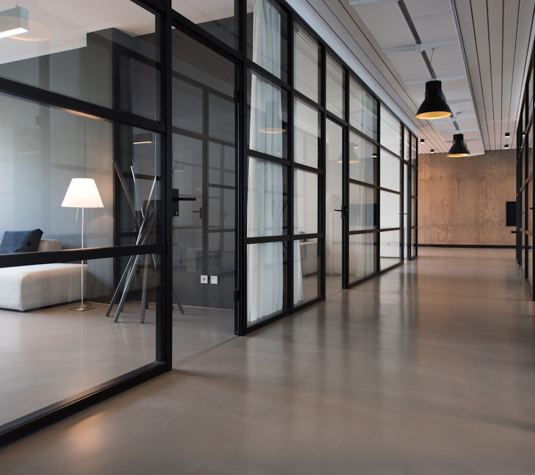
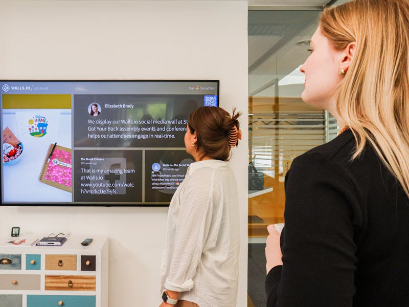

Dynamique relationnelle
Cet axe mesure la capacité de l'espace à favoriser des interactions spontanées, variées et fluides entre les personnes, stimulant ainsi la dynamique collective.

Quand les espaces deviennent des leviers d'engagement,
de collaboration et d'attractivité.
En partenariat avec La Fabrique Spinoza
Le constat
Aujourd'hui, les entreprises investissent massivement dans leurs espaces de travail : rénovations, aménagements innovants, nouveaux équipements — sans toujours pouvoir mesurer leur véritable impact sur les collaborateurs.
Comment savoir si un environnement de travail améliore vraiment le bien-être des équipes, renforce la collaboration entre services, ou favorise l'engagement collectif au quotidien ?
De ce constat est né Spaces that Matter, un outil à la fois participatif et scientifique qui place l'expérience vécue des collaborateurs au cœur de la performance des environnements de travail.
Vos espaces créent-ils réellement de la valeur pour vos équipes et votre entreprise ?

Le concept
Notre référentiel s'appuie sur les neurosciences, la psychologie environnementale, l'ergonomie, la sociologie des organisations, l'économie comportementale — plus de 200 références scientifiques.
Cet axe mesure la capacité de l'espace à favoriser des interactions spontanées, variées et fluides entre les personnes, stimulant ainsi la dynamique collective.
Cet axe évalue dans quelle mesure l'environnement de travail s'adapte aux besoins émotionnels des collaborateurs, en permettant des transitions entre calme, stimulation et collaboration.

Cet axe examine la manière dont les espaces traduisent l'identité, les valeurs et la culture de l'entreprise de façon visible et vécue.
Cet axe analyse comment l'espace incite à la participation active, à la prise d'initiative et à la coopération entre les membres d'une organisation.
Cet axe évalue la capacité des lieux à intégrer harmonieusement les usages hybrides (présentiel/distanciel), en assurant équité, confort et continuité du travail.
Cet axe évalue dans quelle mesure les espaces favorisent les liens avec les parties prenantes externes (clients, partenaires, territoire), en cultivant l'hospitalité, la porosité et l'ancrage local.
Cet axe évalue la manière dont l'aménagement des espaces influence l'inclusion des personnes et la qualité des relations hiérarchiques.
Cet axe évalue dans quelle mesure l'environnement de travail favorise une connexion sensible au vivant, par la présence de nature ou d'éléments sensoriels inspirés du monde naturel.
Concrètement, STM vous permet de :
Identifier précisément ce qui donne envie de venir au bureau et ce qui freine le retour des équipes.
Quantifier la contribution réelle des lieux sur l'engagement, le bien-être, la collaboration et la performance.
Repérer ce qui freine ou active la performance collective pour prioriser les actions.
Notre approche
En complément des normes techniques, nous mesurons ce qui compte vraiment : le ressenti et l'impact sur les personnes.
Les collaborateurs sont acteurs de l'évaluation — ils partagent leur perception authentique des espaces qu'ils occupent.
Hybridation, nouvelles cultures managériales, ouverture au monde : notre référentiel intègre les réalités contemporaines.
HQE, WELL, BREEAM mesurent le bâtiment. Nous apportons la dimension comportementale, culturelle et sociale du lieu.
Un référentiel fondé sur les neurosciences, la psychologie environnementale, l'ergonomie, la sociologie des organisations, l'économie comportementale. Plus de 200 références issues de champs scientifiques complémentaires.
Le label
Le label Spaces That Matter repose sur un questionnaire rigoureusement construit avec la Fabrique Spinoza, think-tank reconnu pour ses travaux sur le travail. Il s'appuie sur plus de 200 références scientifiques.
L'entreprise souscrit. Le questionnaire est envoyé à l'ensemble des collaborateurs — ce sont eux qui évaluent leurs espaces.
Les réponses sont analysées et donnent un score global sur les 8 dimensions. Un rapport détaillé est remis à l'organisation.
Une session avec nos experts pour analyser les résultats en détail et définir des pistes d'amélioration concrètes.
Le label est valable 2 ans et doit être renouvelé, garantissant un suivi régulier et l'amélioration continue des espaces.
Démarrez par un audit exploratoire, pour faire le point sur vos espaces, avant même la démarche de labellisation.
L'audit exploratoire vous donne :
Cette évaluation peut servir de point de départ à une démarche de labellisation ou d'amélioration des espaces de travailEn savoir plus sur le label
Vous voulez voir STM en action ?
Notre démo est une présentation personnalisée et interactive de notre solution de labellisation. En 30 minutes, découvrez comment nous mesurons la performance humaine des espaces de travail à travers les 8 dimensions, explorez nos outils d'évaluation et visualisez les rapports détaillés que vous recevrez.
Nos experts vous guident à travers des cas concrets et répondent à toutes vos questions sur le processus de labellisation, les bénéfices pour votre organisation, et les prochaines étapes pour démarrer.
Une présentation personnalisée de notre méthodologie de labellisation et de nos outils d'évaluation.
Parcourez avec nous les 8 dimensions, découvrez les rapports et comprenez le processus de labellisation.
Une session adaptée à vos besoins spécifiques avec réponses à toutes vos questions sur le label.